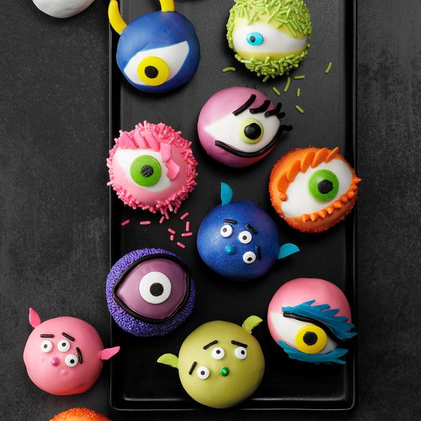

Cake Eyeballs

Ingredients
- 1 package cake mix of your choice (regular size)
- 1 cup prepared frosting of your choice
- 1 package (12 ounces) each orange, pink, blue, purple, vibrant green, black and white Wilton candy melts
- Decorations of your choice: candy coating disks, jumbo sprinkles, candy-coated sunflower kernels, candy eyeballs, Twizzlers.
Steps
- Prepare and bake cake mix according to package directions, using a greased 13x9-in. baking pan. Cool completely on a wire rack.
- Crumble cake into a large bowl. Add frosting and mix well. Shape into 1-1/2-in. balls. Place on baking sheets. Chill cake balls until firm, at least 2 hours in freezer or at least 3 hours in refrigerator.
- In separate bowls, heat candy melts in the microwave until melted; stir until smooth. Dip each cake ball in coating; allow excess to drip off. Decorate as desired. Let stand until set.
Nutricion Facts
1 cake ball: 182 calories, 8g fat (2g saturated fat), 23mg cholesterol, 208mg sodium, 25g carbohydrate (15g sugars, 1g fiber), 2g protein.
Home